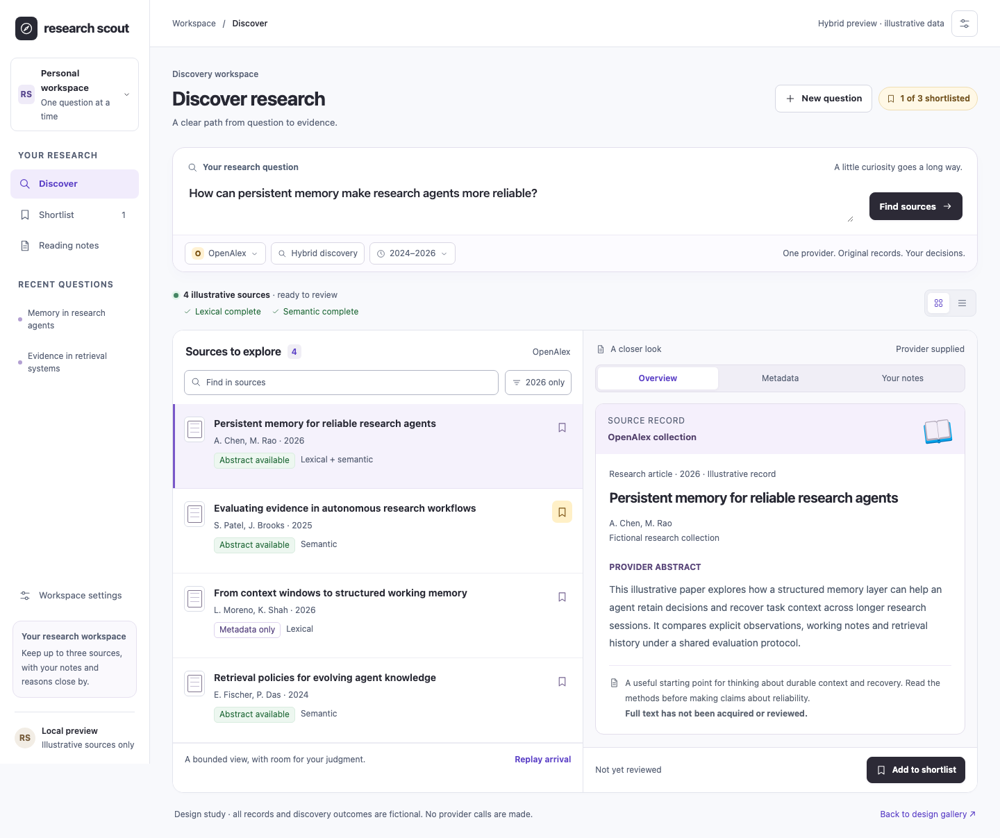
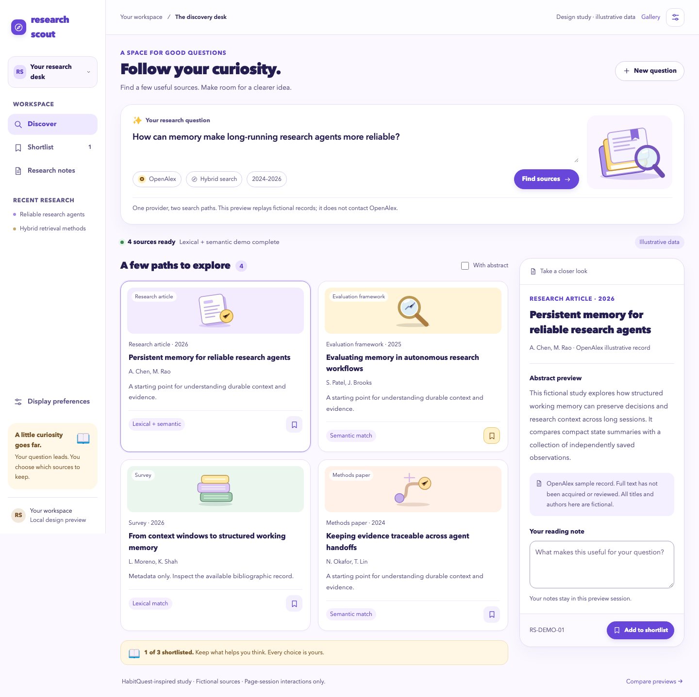
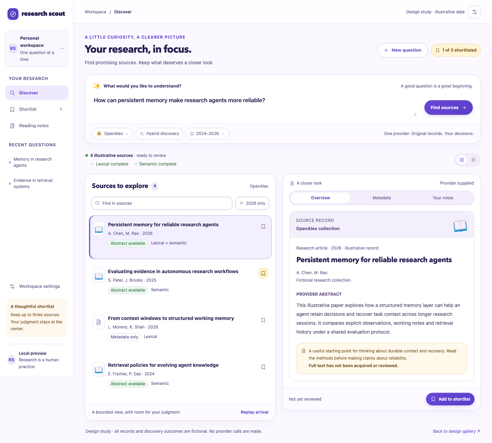

03 / Your hybrid direction
Research Scout, with warmth
Dub’s compact organization and dark actions, with HabitQuest’s soft lavender accents, rounded composer and selective artwork.
A warmer way to explore
Three directions to compare. Start with the hybrid: Research Scout’s compact Dub-inspired structure, with selective warmth from HabitQuest.

Dub’s compact organization and dark actions, with HabitQuest’s soft lavender accents, rounded composer and selective artwork.

More personality, semantic artwork and generous rounded panels. A warm, welcoming research space with practical source controls.

The same warmth, tuned for focused research. A compact source index, clear settings and a reader that keeps the evidence close.
These are standalone design previews with fictional sources and local interactions. The working Research Scout app remains on its selected Dub-inspired design. HabitQuest’s family, rewards and buddy features are not part of these research concepts. Typography uses local system fallbacks.